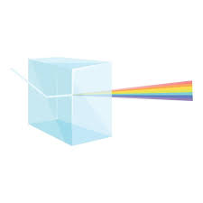

A Natureza da Luz e a Dispersão
Até o século XVII, pensava-se que a luz branca era pura e que os objetos a coloriam. Em 1666, o físico Isaac Newton provou o contrário através de um experimento famoso: ele fez um feixe de luz solar passar por um prisma de vidro.
O que aconteceu foi a dispersão da luz: a luz branca se dividiu em todas as cores do arco-íris. Isso ocorre porque cada cor viaja pelo vidro com uma velocidade ligeiramente diferente, sofrendo desvios (refração) em ângulos distintos. Newton provou que a luz branca é, na verdade, a mistura de todas as cores.

Reflexão Regular
Ocorre em superfícies perfeitamente lisas e polidas (como o vidro do espelho ou a água parada). Os raios de luz chegam paralelos e são refletidos todos na mesma direção, mantendo a organização da imagem.
.jpeg)
Reflexão Difusa
Ocorre em superfícies irregulares ou rugosas (como o papel, a parede ou uma blusa). Os raios de luz chegam paralelos, mas rebaterem em várias direções diferentes. É graças a isso que conseguimos enxergar os objetos ao nosso redor de qualquer ângulo, mas sem ver um reflexo neles.
A Jornada da Luz: Uma Narrativa Integrada
Se juntarmos todos esses conceitos em uma única narrativa sobre a jornada da luz, percebemos que a física das cores, a ótica do olho humano e o funcionamento dos espelhos estão intimamente conectados.
Tudo começa com a própria natureza da luz visível, que é uma forma de radiação eletromagnética composta por vários comprimentos de onda, onde os mais longos correspondem ao vermelho e os mais curtos ao violeta. Quando essa luz, que em seu estado natural e misturado se apresenta como branca, atinge um objeto, ela interage com a matéria através de processos de absorção e reflexão. Um objeto só tem cor porque absorve determinadas frequências de energia e reflete outras de volta para o ambiente. Uma folha é verde porque absorve o vermelho e o azul para fazer fotossíntese e rejeita o verde, enquanto um objeto perfeitamente branco reflete todas as cores e um objeto preto absorve todas elas, transformando a luz em calor.
Essa luz refletida pelos objetos viaja pelo espaço até encontrar o olho humano, que funciona de maneira muito semelhante a uma câmera fotográfica biológica. O primeiro contato da luz ocorre na córnea, uma lente fixa e transparente que sofre o primeiro processo de refração, desviando os raios luminosos para dentro do olho. Em seguida, a íris controla a abertura da pupila para regular a quantidade exata de luz que entra, direcionando-a para o cristalino. O cristalino é uma lente flexível que realiza a acomodação visual, alterando sua própria curvatura para focar objetos que estão perto ou longe. Como o olho funciona como um sistema ótico convergente, esses raios de luz se cruzam e projetam na retina uma imagem real, menor e completamente invertida, ou seja, de cabeça para baixo. São as células fotossensíveis da retina que transformam essa informação luminosa em impulsos elétricos para que o cérebro, enfim, desinverta e processe a imagem final que enxergamos.
No entanto, o caminho da luz pode ser interceptado e manipulado antes mesmo de chegar aos nossos olhos através dos espelhos, cujo funcionamento é regido pelas leis da reflexão. A física determina que toda vez que a luz atinge uma superfície polida, o ângulo com que ela incide é exatamente igual ao ângulo com que ela rebate. Se a superfície for perfeitamente lisa, ocorre uma reflexão regular, mantendo a organização dos raios e gerando uma imagem nítida, ao passo que superfícies rugosas geram uma reflexão difusa, espalhando a luz em várias direções.
Nos espelhos planos do nosso cotidiano, a imagem projetada é virtual, possui o mesmo tamanho e distância do objeto real, mas aparece invertida da esquerda para a direita. Já os espelhos esféricos mudam completamente essa dinâmica: os côncavos, que curvam para dentro, convergem a luz e podem ampliar a imagem para focar em detalhes próximos, enquanto os convexos, que curvam para fora, espalham os raios de luz e reduzem o tamanho das imagens, permitindo expandir significativamente o campo visual de quem observa.
Assim, desde a decomposição de um raio de sol até o reflexo em um retrovisor, a física demonstra que o que chamamos de visão e cor é, na verdade, uma coreografia geométrica e contínua da luz interagindo com o mundo.
Como os Objetos Ganham Cor? (Absorção e Reflexão)
Quando a luz branca atinge um objeto, ele não "cria" cor. Ele funciona como um filtro, dependendo dos átomos e moléculas que o compõem. Ocorrem dois fenômenos principais:
- Absorção: O objeto absorve alguns comprimentos de onda (energia).
- Reflexão: O objeto rejeita (reflete) outros comprimentos de onda.
Exemplo Prático: Uma folha de árvore é verde porque, ao receber a luz do Sol, ela absorve o vermelho e o azul (usados na fotossíntese) e reflete a luz verde de volta para os nossos olhos.
E o que são o preto e o branco?
- Branco: É o resultado de um objeto que reflete todas as cores da luz visível uniformemente.
- Preto: É a ausência de cor (ou ausência de luz refletida). Um objeto preto absorve praticamente toda a luz que incide sobre ele, transformando essa energia em calor.
O Caminho da Luz: Componentes Óticos do Olho
Para que possamos enxergar um objeto, a luz refletida por ele precisa entrar no nosso olho e ser focalizada perfeitamente. Esse processo depende de quatro estruturas principais:
- Córnea: É a "janela" transparente e curva na parte externa do olho. Ela funciona como a primeira e mais potente lente fixa do sistema, sofrendo o primeiro processo de refração (desvio) da luz.
- Íris e Pupila: A íris (a parte colorida) funciona como o diafragma de uma câmera. Ela controla o diâmetro da pupila (o "furo" preto) para regular a quantidade de luz que entra. No escuro, a pupila se dilata; na claridade, ela se contrai.
- Cristalino: É a lente interna do olho. Ao contrário da córnea, o cristalino é flexível e pode mudar de formato para ajustar o foco, um processo chamado de acomodação visual.
- Retina: É o "filme" ou o sensor digital da câmera. Localizada no fundo do olho, ela contém células fotossensíveis (cones e bastonetes) que transformam a energia da luz em impulsos elétricos enviados ao cérebro.
A Formação da Imagem: Tudo de Cabeça para Baixo
Do ponto de vista da física, o olho humano é um sistema ótico convergente. Quando os raios de luz passam pela córnea e pelo cristalino, eles convergem (se juntam) em um único ponto exatamente sobre a retina.
Como o cristalino é uma lente convergente, a imagem projetada na retina possui três características físicas básicas:
- Ela é real (pode ser projetada).
- Ela é invertida (fica de cabeça para baixo).
- Ela é menor que o objeto real.
E por que não vemos o mundo invertido? Porque o cérebro (através do córtex visual) recebe esses impulsos elétricos pelo nervo óptico e processa a imagem, desinvertendo-a automaticamente para nós.
.jpeg)